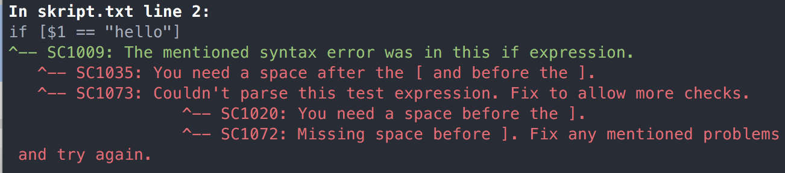

Linuxové shelly pochádzajú čias, keď boli starí tvorcovia krutí a malicherní a tomu zodpovedá aj syntax. (Nehovoriac o tom, že v tých časoch ešte ani Linux nebol.)
Nejedna noc bola premárnená hľadaním nadbytočnej medzery, a nejedna klávesnica rozmlátená pri zistení, že skript vymazal to, čo nemal.
Okrem toho, best practices pripomínajú zaklínadlá zo stredoveku, než logické rady. (“Pri čítaní obsahu premenných dajte pred názov premennej dolár a celé to obaľte do úvodzoviek”.)
Našťastie, je tu shellcheck, ktorý posunie skriptovanie z druhohôr.
Čo je shellcheck?
Shellcheck je linter, teda nástroj, ktorý skontroluje skript a overí, či neporušuje niektorú z 338 typických priekakov. Je natoľko vyladený, že predíde nielen bežným začiatočníckym omylim, ale vyvaruje pred úplne obskúrnymi situáciami, ktoré zaskočia aj veteránov.
Je k dispozícii na Linuxe aj MacOS, a je napísaný v Haskelli.
Inštalácia
shellcheck je dostupný prakticky všade. Na Fedore cez yum či dnf, na Debiane cez apk, na MacOS cez brew a možností je mnoho.
Okrem toho má pluginy pre Visual Studio Code, Atom, vim, Emacs a milión ďalších editorov.
A v prípade núdze je tu https://www.shellcheck.net/, kde stačí capnúť svoj skript a dozvieme sa výsledok cez browser.
Použitie
Stačí vytvoriť skript a overiť ho:
shellcheck skript.sh
Shellcheck sám odhadne typ shellu, podľa riadku shebang a prispôsobí kontrolu.
Dajme si totálne zlo:
#!/bin/sh
if [$1 == "hello"]
then
echo $1
fi
Shellchecknutie rovno poradí, že „okolo premennej majú byť úvodzovky“ (chyba SC2086).

Vidíme, že okolo hranatých zátvoriek majú byť medzery. (Ide o parametre pre test)
Ak to opravíme, shellcheck pokračuje ďalej:
if [ $1 == "hello" ]
^-- SC2086: Double quote to prevent globbing and word splitting.
^-- SC2039: In POSIX sh, == in place of = is undefined.
Okolo čítania premennej 1 majú byť medzery, čo opravíme na dvoch miestach.
Finálna chyba:
if [ "$1" == "hello" ]
^-- SC2039: In POSIX sh, == in place of = is undefined.
Porovnávanie reťazcov v posixovom shelli nie je cez dve „rovná sa“, ale cez jedno.
Finálny skript vyzerá nasledovne:
#!/bin/sh
if [ "$1" = "hello" ]
then
echo "$1"
fi
Bežné trampoty a obskúrne trampoty
Shellcheck kontroluje myriády bežných chýb:
-
chýbajúce úvodzovky pri čítaní z premenných, napr.
echo $USER -
zbytočné doláriky pri zápise do premenných
$USER = 1 -
zbytočné medzery pri zápise do premenných
USER = 1 -
guľaté zátvorky (miesto hranatých) pri if
if ($USER = 1) -
zlé použitie úvodzoviek a globbingu: iterovanie cyklom for , kde sú úvodzovky naviac alebo hľadanie cez find s chýbajúcimi úvodzovkami.
for FILE in "*.mp3" # a find . -name *.mp3 -
zle postavený globbing
echo *.mp3
Samozrejme, kontroluje aj obskúrnejšie záležitosti:
- zle umiestnené unicodové úvodzovky, či biele miesta (typografia z MacOSu do shellu nepatrí)
- iterácie cez výstup
find-u, ktoré sa môžu rozbiť na bielych miestach - a ostatných 300+ potenciálnych chýb
Zdroje
- https://www.shellcheck.net/
- repozitár koalaman/shellcheck na GitHube
- popis vzorovej chyby vo Wiki